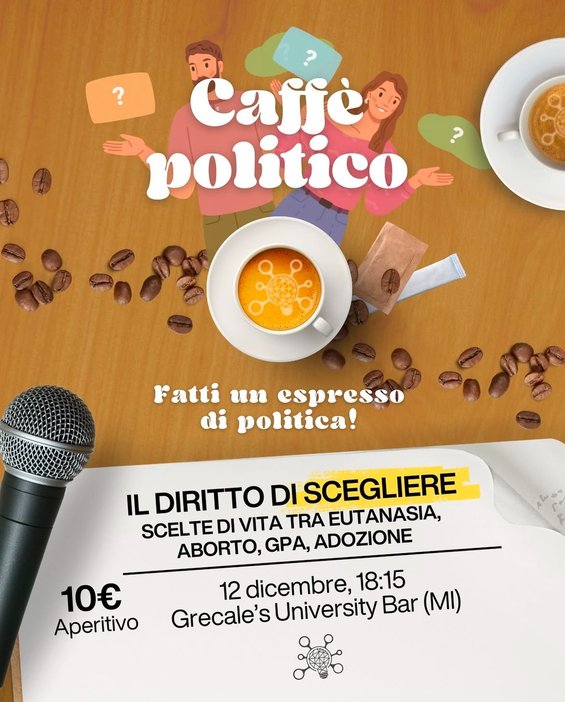
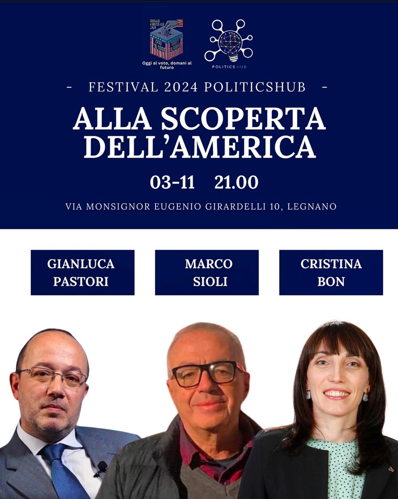
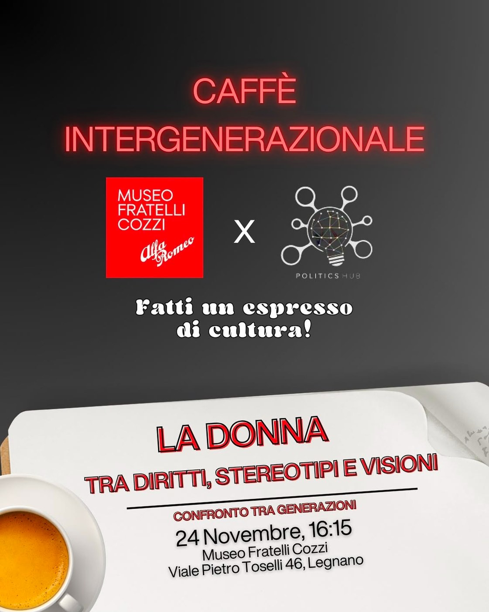
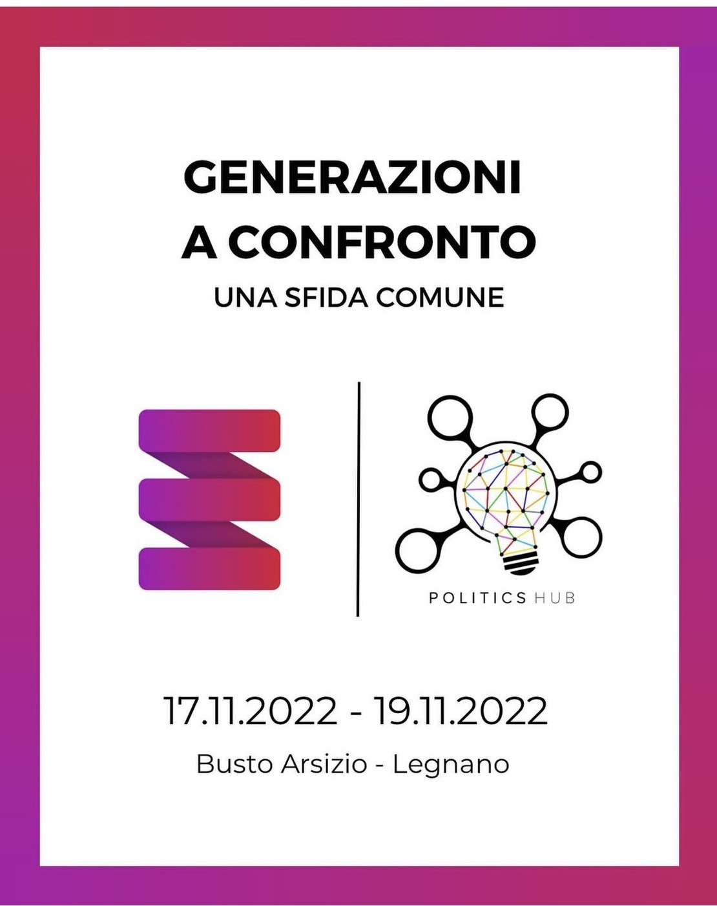
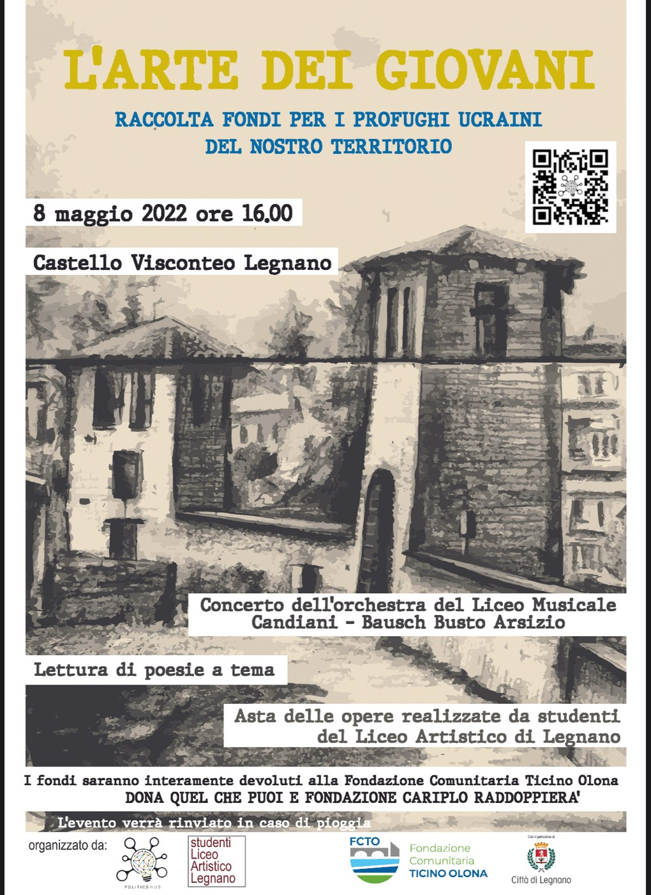

Nuestros eventos
Creemos que la mejor herramienta para el diálogo es el encuentro con mujeres y hombres protagonistas a nivel local e internacional.
El próximo evento
Todos nuestros eventos
Las crónicas completas se están migrando al nuevo sitio: por ahora se abren en la plataforma anterior, en italiano.


Gestación subrogada y ley: el futuro de la maternidad subrogada entre ética y legislación
Oímos hablar a menudo de gestación subrogada, pero ¿sabemos realmente qué es?
Leer
Las elecciones estadounidenses desde Ámsterdam
Un retrato de las elecciones del 5 de noviembre: la victoria de Trump, el voto desde el extranjero y las esperanzas.
Leer
Will he really "Make America Great Again"?
Un análisis de las promesas de la nueva administración estadounidense.
Leer
Los errores pilares del techo de cristal
Una reflexión sobre la igualdad de género y de oportunidades.
Leer
#USEYOURVOTE: la guía de Politics Hub para las elecciones europeas de 2024
Nuestra guía para votar con conocimiento de causa en las elecciones europeas de 2024.
Leer
La visión lombarda para el futuro de Europa
Un debate sobre reformas, inversiones estratégicas y política exterior europea.
Leer
Pluralismo informativo: el desafío de Politics Hub
Nuestro desafío por una información libre y plural.
Leer
Festival 2022: una Constitución para los jóvenes
La Constitución leída con los ojos de las nuevas generaciones.
Leer

El pecado original de las materias STEM
La educación científica y las brechas que hay que cerrar.
Leer
Programas escuela-trabajo (PCTO): ¿cómo sacarles el máximo partido?
Competencias transversales e itinerarios de orientación: cómo hacerlos realmente útiles.
Leer
Los jóvenes quieren y deben hablar de Ucrania
Por qué las nuevas generaciones no pueden quedarse calladas.
Leer
Las tensiones entre Rusia y Ucrania explicadas por Paolo Alli
Un análisis con el expresidente de la Asamblea Parlamentaria de la OTAN.
Leer